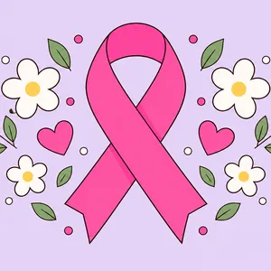
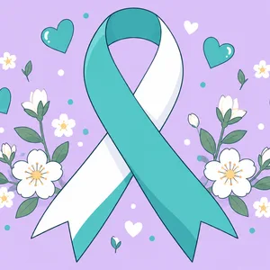
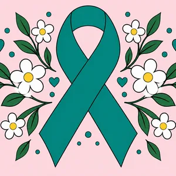
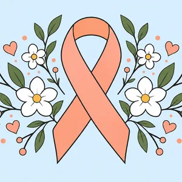
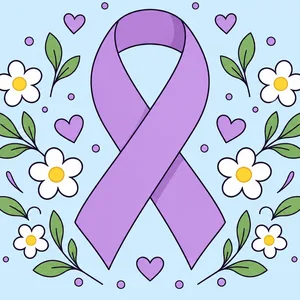
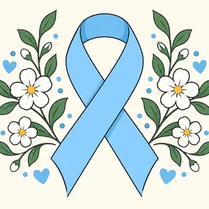
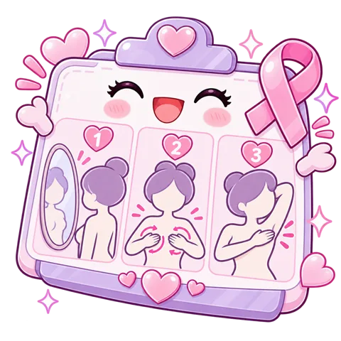

Cómo ganarle al cáncer: prevenir y detectarlo a tiempo
Mama, cuello uterino, endometrio, ovario, testículo y próstata. Algunos se previenen con una vacuna, otros se encuentran temprano con un examen sencillo. Esta historia muestra cuántos son, cómo han cambiado, qué tienen que ver con las ITS y qué control te toca a ti.
Cada cáncer tiene su cinta de color para recordar que se previene y se detecta a tiempo:






Toca un cáncer y míralo todo
¿Cuántos casos hay en Chile?
¿Dónde está Chile frente al mundo?
Testículo: casi 4 veces el mundo
Chile tiene una de las tasas más altas: 6,8 por 100.000 frente a 1,8 en el mundo. Por eso el autoexamen es tan importante aquí.
Próstata: casi el doble
41,1 casos por 100.000 frente a 22,4 en el mundo, y una mortalidad también más alta (12,2 frente a 7,5).
Mama: menos casos, pero más letal
Chile tiene menos casos que el promedio mundial, pero mueren más mujeres por cada 10 casos (3,6 frente a 2,8): se diagnostica tarde.
Cuello uterino: mejor que la región
Muere menos que en Latinoamérica (4,4 frente a 5,0 por cada 10 casos), gracias al PAP y la vacuna. Aún lejos de la meta de eliminación de la OMS (menos de 4 casos por 100.000).
Encontrarlo temprano cambia todo
De cada 100 personas, ¿cuántas siguen vivas 5 años después?
Simulador: ¿y si más personas se controlan?
¿Cómo lo calculo?
Mama: la mamografía baja cerca de 40% la mortalidad en las mujeres de 50 a 69 años que se la hacen (IARC 2016). Supongo que 4 de cada 10 de las 1.829 muertes anuales ocurren en ese grupo y que hoy está cubierto el 37,4%.
Cuello uterino: el tamizaje cada 3 a 5 años previene cerca del 80% de los cánceres en las mujeres tamizadas (IARC 2005). Parto de 1.905 casos y una cobertura actual estimada de 43%.
Es una estimación educativa con supuestos visibles, no una proyección oficial.
Una buena noticia y una alerta
Cuello uterino · tasa de mortalidad por 100.000 mujeres
Mama · muertes por año
El VPH causa casi todos los cánceres de cuello uterino
VPH = ITS
El virus papiloma humano se transmite por contacto sexual. Los tipos 16 y 18 causan cerca del 70% de los cánceres de cuello uterino; la vacuna Gardasil 9 cubre cerca del 90%.
No solo en mujeres
El VPH también causa cáncer de ano, pene y garganta (orofaringe). Por eso en Chile se vacuna a niñas y niños.
VIH y otras ITS
Las mujeres con VIH tienen 6 veces más riesgo de cáncer de cuello uterino. La clamidia y el tabaco ayudan a que el VPH persista. Usar condón y tratar las ITS también previene cáncer.
Mama, ovario, endometrio, testículo y próstata
No son causados por ITS. Sus riesgos son la edad, la genética (BRCA), la obesidad, el alcohol, el tabaco, los antecedentes familiares y, en el testículo, el testículo no descendido.
Prevención, pesquisa y tratamiento
Información educativa basada en guías MINSAL/GES, OMS y GLOBOCAN 2024. Los tratamientos los decide el equipo de oncología según cada caso.
Arma tu calendario de salud
Soy
Consulta si notas esto

Bulto o endurecimiento, piel de naranja, pezón hundido de nuevo, secreción con sangre, cambio de forma.
Sangrado después de la relación sexual o entre reglas, flujo con mal olor, dolor pélvico.
Cualquier sangrado después de la menopausia. Reglas muy abundantes o fuera de fecha después de los 40.
Hinchazón del abdomen, llenarse rápido, dolor pélvico o ganas de orinar seguido por más de 2 a 3 semanas.
Bulto duro sin dolor, aumento de tamaño, sensación de peso en el escroto, dolor sordo en la ingle.
Orinar muy seguido o de noche, chorro débil, sangre en la orina o el semen, dolor de espalda o caderas que no se pasa.
¿Cuánto sabes?
Más controles, menos cáncer tardío
Mamografía al día
Solo 37,4% de las mujeres de 50 a 69 años la tiene vigente; la meta es 70%. Más horas de matrona para citar, recordar y derivar.
Test VPH en GES
El test molecular de VPH es más sensible que el PAP y entra al GES en 2026. La matrona toma la muestra en el CESFAM.
Vacuna VPH
Cobertura de 86,2% en niñas; la meta es 90%. Vacunar también en el colegio a quienes se atrasaron.
Autoexamen testicular
Enseñarlo en el colegio y en el control del adolescente: un minuto al mes, en la ducha.
Hombres al control
Invitar a los hombres al Examen de Medicina Preventiva y a conversar el examen de próstata.
Marco en Chile: Ley Nacional del Cáncer (Ley 21.258, 2020), Plan Nacional de Cáncer 2022–2027 y garantías GES para cáncer de mama, cervicouterino, próstata y testículo. Las guías clínicas del MINSAL definen quién se controla y cuándo.
Historia de datos de María Cisterna Escobar, matrona · Registro Superintendencia de Salud N° 561993. Las cifras de casos son estimaciones GLOBOCAN 2024 para Chile; las muertes por año vienen del DEIS-MINSAL. Material educativo: no reemplaza la consulta.